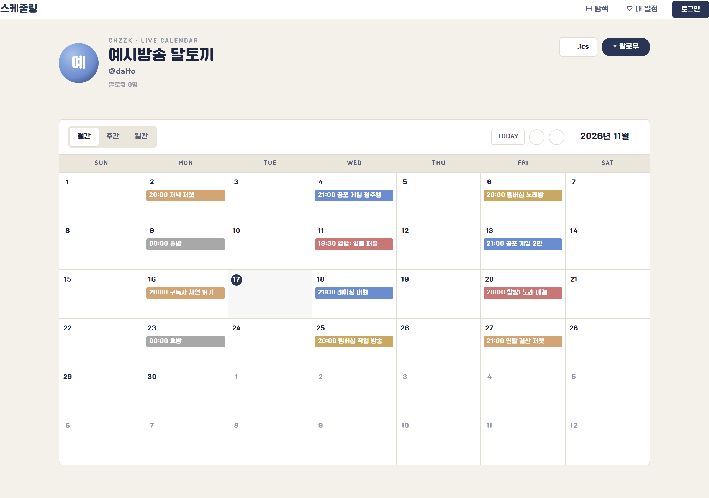
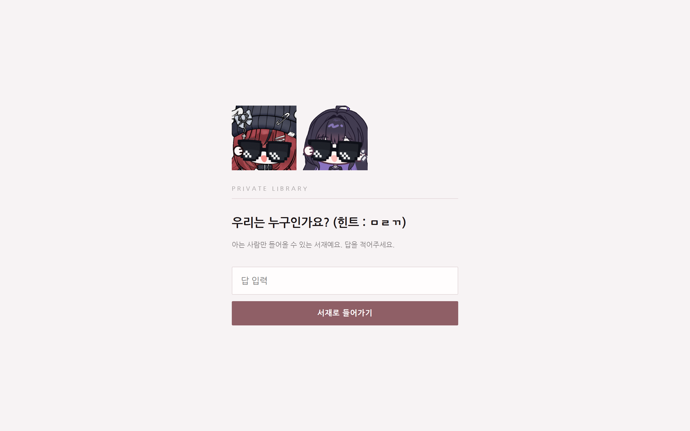

풀스택 웹 개발자 · 시스템 엔지니어
웹 서비스부터
클라우드 구축까지.
손승아
OpenStack 운영 · 장애 대응, 유지관리
AWS · NHN · NCP · KT Cloud 구축
현재
(주)으뜸정보기술
MSP 구축팀 · 2026.08 –
AWSNHN CloudNCPKT Cloud
2년 3개월인프라 경력
9개개인 프로젝트
프로젝트
혼자 기획하고 만든 것들
대표 5개 · 그 밖의 4개


연홍차봇
치지직 스트리머 전용 채팅봇과 소개·관리 페이지 · 2026.10 – 운영 중
Node.jspm2치지직 APIAWS EC2S3 · CloudFrontCloudflare Tunnel

하루
웹과 폰에서 같이 쓰는 기분 일기 · 2026.07
ReactExpoExpressSQLite

스케줄링
스트리머 방송 일정을 내 캘린더로 · 2026.04
ReactViteExpressJWT

PC 모니터링 대시보드
인터넷 없이 도는 내 PC 상태판 · 2026.06
PythonFlaskpsutilSQLite

루넬리움
아는 사람만 들어오는 팬 창작 소설 서재 · 2026.09
ReactViteSupabaseRLS
구축 · 운영
구축하고, 운영한 클라우드
설계부터 구축까지NHN CloudNCPKT CloudAWS
01설계견적서 작성
아키텍처 초안 작성
아키텍처 초안 작성
02구축NHN Cloud VM 생성
서비스 환경 구성
서비스 환경 구성
03보안 · 백업백신 · 백업 에이전트 설치
백업 정책 생성
백업 정책 생성
MSP 클라우드 구축
(주)으뜸정보기술 · SA · 2026.08 – 현재
NHN CloudNCPKT CloudAWS견적 · 아키텍처백업 · 백신
1년 운영 주기
1분기2분기3분기4분기
장애 대응 · 리소스 관리상시
보안취약점 점검 · 패치상시
백업연 4회
모의복구 훈련연 1회
공공 클라우드 운영
국가정보자원관리원 광주센터 · 오케스트로 · 2025.02 – 2026.01
OpenStackIaaSLinux백업 · 복구취약점 점검 · 패치
경력
운영에서
구축으로.
국가정보자원관리원 OpenStack 풀 운영
공공기관 클라우드 구축
4개 클라우드 벤더 구축 담당
2026.08 – 현재
(주)으뜸정보기술
MSP 구축팀 · Solutions Architect (SA)
- NCP · KT · NHN · AWS 4개 벤더사 견적서 · 벤더별 아키텍처 작성
- NHN 전남공통 구축 (영암군청 · SA)
- NHN 공공 구축 · 아키텍처 · 백업 부문 참여 (전남테크노파크)
2026.02 – 2026.07
개인 프로젝트
2024.07 – 2026.01
오케스트로
OpenStack 엔지니어
- OpenStack 구축 · 유지보수
국가정보자원관리원 광주센터2025.02 – 2026.01
정보시스템1군 클라우드팀 · OpenStack 풀
- OpenStack 기반 IaaS 운영 · 장애 대응
- 백업(연 4회) · 모의복구 훈련(연 1회)
- 서버 보안취약점 점검 · 패치
자격 · 교육
리눅스마스터 2급한국정보통신진흥협회
2024.06
SW 전문 교육기관 산대특 언어지능 기반 분석 서비스모델 개발자과정스마트인재개발원
2023.09 – 2024.04